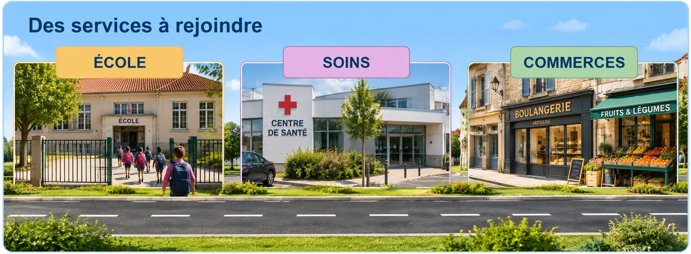

Comparer l’accès aux services selon le lieu de vie
Selon le lieu où l’on habite, les services peuvent être proches ou demander un trajet plus long.
Accéder à l’école, aux soins et aux commerces

Visuel pédagogique photoréaliste composé pour comparer les paysages. Ce n’est pas une photographie documentaire.
1. Reconnaître les services
L’école, les commerces, les soins, les transports et les activités culturelles répondent aux besoins des habitants.
2. Comparer les déplacements
Dans un quartier dense, on peut parfois aller à pied à plusieurs services. Dans un village éloigné, il faut parfois prendre un bus ou une voiture.
3. Comprendre les solutions
Les transports scolaires, les lignes de bus et les services itinérants peuvent faciliter la vie des habitants.
Je retiens
L’accès aux services varie selon le lieu de vie. La distance et les moyens de transport sont importants pour les habitants.